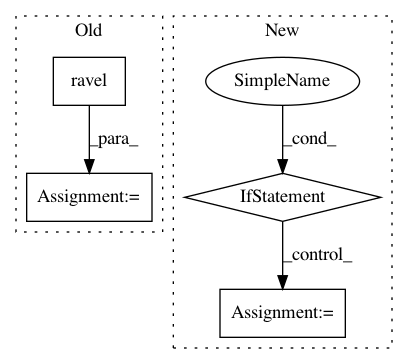

8b621a409cd07d0f5610a2648b6413322c39a822,GPy/likelihoods/likelihood.py,Likelihood,ep_gradients,#Likelihood#,230
Before Change
Y_metadata_list.append(Y_metadata_i)
val = self.site_derivatives_ep(Y[index], tau[index], v[index], Y_metadata_i)
dlik_dtheta[:, index] = val.ravel()
f = partial(self.integrate)
quads = zip(*map(f, Y.flatten(), mu.flatten(), np.sqrt(sigma2.flatten())))
quads = np.vstack(quads)
After Change
quads = zip(*map(f, Y.flatten(), mu.flatten(), np.sqrt(sigma2.flatten()), Y_metadata_list))
quads = np.vstack(quads)
quads.reshape(self.size, shape[0], shape[1])
elif quad_mode == "gh":
f = partial(self.integrate_gh)
quads = zip(*map(f, Y.flatten(), mu.flatten(), np.sqrt(sigma2.flatten())))
quads = np.hstack(quads)
quads = quads.T
else:
raise Exception("no other quadrature mode available")
// do a gaussian-hermite integration
dL_dtheta_avg = boost_grad * np.nanmean(quads, axis=1)
In pattern: SUPERPATTERN
Frequency: 3
Non-data size: 4
Instances
Project Name: SheffieldML/GPy
Commit Name: 8b621a409cd07d0f5610a2648b6413322c39a822
Time: 2017-08-10
Author: akash.dhaka@aalto.fi
File Name: GPy/likelihoods/likelihood.py
Class Name: Likelihood
Method Name: ep_gradients
Project Name: astroML/astroML
Commit Name: 58d42441082b0d869f26dfec1425c09cdf57c87b
Time: 2019-03-04
Author: alexander.conley@colorado.edu
File Name: astroML/datasets/generated.py
Class Name:
Method Name: generate_mu_z
Project Name: snorkel-team/snorkel
Commit Name: 0514d4b6de97d652e6cd99c7b557018890a6ec99
Time: 2017-06-26
Author: ajratner@gmail.com
File Name: snorkel/learning/disc_learning.py
Class Name: TFNoiseAwareModel
Method Name: train